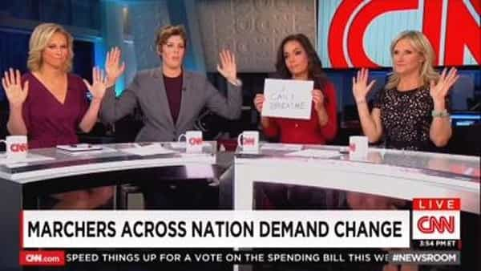
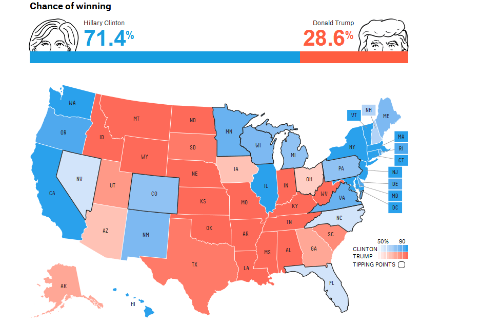

Libertas is a young bard traveling along the endless road to self-improvement and recounting his adventures. You can follow him on Twitter.


Refusing to learn from the great rebuke they’ve experienced this year, our friends in the legacy media have doubled down hard, continuing their shrieking hysterics and redoubling their efforts to clamp down on what they call “fake news.”
Though comical and a sign of desperation at their rapidly dwindling influence, we still must be cautious. I warned weeks ago that the collusion on the “fake news” angle by the media was the first step in an ad campaign to promote censorship, and with the recent incident at Comet Ping Pong being described as a result of “fake news” (undoubtedly a coordinated effort), we can expect more drives to censorship in the future given this perfect fodder for their narrative.
Unfortunately for the self-anointed watchdogs in our supposedly free press, the “fake news” label, while potentially potent, is ripe for reverse engineering, and it was immediately blown back at its creators. Here’s a brief rundown of 10 “fake news” stories peddled by the “real news” media.
Of all the hoaxes peddled by the media on Donald Trump in the past 18 months, this one was arguably the most glaringly obvious falsehood. The story goes that a Carlos Slim/Jeff Bezos blogger (otherwise known as the New York Times and the Washington Post, respectively), Serge Kovaleski, a man who suffers arthrogryposis, which gives him joint problems, was “mocked” by Donald Trump after a conflict over a story regarding Muslims celebrating on 9/11. To this day, Clinton News Network talking head Jake Tapper runs with this narrative as being objectively true. I’ll just let this one speak for itself.
https://www.youtube.com/watch?v=_8JqT2atxD8
Fake news. The media lied.
We’ve written extensively about GamerGate here, and for good reason, as it was the first true victory against the cultural left in many years. Yet the whole movement sprung as a result of “fake news” trickling into gaming media. Gamers, justly tired of being harangued and shamed by the fake news media, revolted against social justice intrusion in their space, but the revolt was characterized as a “targeted harassment campaign,” and nothing but that, for months on end by the “real news” media. Laughably, cases of “harassment” were brought to the FBI, which were then closed due to lack of evidence.
The media failed to understand the actors involved in the revolt and that was a key reason why GamerGate eventually won.
The fake news media’s arrogance and condescension acted as a blinder that failed to give it proper intelligence about the revolt and also caused more people to join it. It was a prelude of things to come.
In early 2015, Roosh wrote “How to Stop Rape.” His mistake was assuming that people were smart enough to see the point of the post and not put a disclaimer that it was satire. In the age of outrage, this was foolish. When he took his lecture tour in August of that year to Canada, perhaps the headquarters of social justice freaks, he was immediately slapped with the “pro-rape” label, stalked, hounded by mobs, and assaulted.
The mob behavior further increased in intensity during the meetup outrage in February, when hundreds of publications in dozens of countries collectively labeled Roosh as pro-rape. Roosh, of course, acted in the best way and took the fight straight to them.
Fake news. The media lied.
In late 2014, Rolling Stone released its infamous “A Rape on Campus” story. The “journalist,” Sabrina Rubin Erdely, went around campuses looking for a rape story that year. The University of Virginia tale spun by Jackie Coakley was the best she could find. While the outrage machine began after its publication, others quickly found discrepancies in the story and it unraveled. In the old days, any rookie journalist would have known not to publish this, but in the age of narrative spinning called real news, it went through. At least this time some justice has been done, as defamation lawsuits regarding the story have been successful.
Fake news. The media lied.
Stories like this unfortunately do damage beyond the parties immediately effected. They contribute to a culture of rape hysteria, which naturally puts men under unfair scrutiny and prevents meaningful relationships from forming, as an air of fear permeates.
And Obama has the gall to discuss “the problem of fake news” with this hoaxing outlet. Sometimes I wonder if they’re even trying to appear credible anymore.
August, 2014. Michael Brown, a black man, was killed by a white police officer in Ferguson, Missouri. Early accounts had postured that Brown had his hands up in surrender and was shot anyway. The story was circulated widely by the media, along with pictures of Brown in his cap and gown. All of this led the audience to the conclusion that Brown was a good, upstanding citizen shot by racist police. It was perfect fodder for the desired narrative, which is why responsible journalists should have been skeptical. They weren’t.
And so the Black Lives Matter movement was born in the minds of the mainstream public (it started before this but it became mainstream after this incident). Of course all of the evidence that was collected contradicted this emotional tale. There was no “hands up, don’t shoot” incident.

Fake news. The media lied.
And it has continued to lie about the Black Lives Matter movement, which has already inspired murders. Case in point:
https://www.youtube.com/watch?v=7cveRBWgDTM

Our @pollsterpolls model gives @HillaryClinton a 98.1% chance of winning the presidency https://t.co/E9mjH42Sa4 pic.twitter.com/RcNnoTqdke
— Huffington Post (@HuffingtonPost) November 7, 2016
Sleep well. pic.twitter.com/3zXb0R4ohm
— Nate Cohn (@Nate_Cohn) October 24, 2016
Trump won’t win Michigan, and I am frankly offended that people think this is even a possibility https://t.co/HD6pBc0EtZ pic.twitter.com/O0lgd18psn
— Jonathan Chait (@jonathanchait) November 7, 2016
Fake news. The media lied.
And they’re now upset over his victory tour. Fortunately, you’ll always have me to tell you the real story.
While the fake news media constantly accuses its opponents of peddling conspiracy theories, they peddled a big and far more dangerous one this year, that Russia, under the auspices of a Vladimir Putin that seems to be the person responsible for everything they hate, would do whatever bad thing they imagined in their nightmares.
We’ve often heard stories about “Russian hackers,” particularly in regard to Podesta’s emails, but he was seriously lax on his security, and it wouldn’t take the Russian equivalent of the NSA to hack his accounts.
The so-called attacks by “Russian hackers” on DNC servers was ambiguously reported by intelligence agencies as being such, but there may be another story.
Regardless of the veracity of these accusations, the emails were legitimate, and the Russian narrative took precedence in the media over this simple question—“should our politicians be acting this way?” The media, in their zeal for Hillary Clinton, largely ignored the newsworthiness of the leaked emails throughout the campaign. Small wonder, since many of those emails showed outright collusion that went undisclosed.
And then there’s the latest focus on Russian propaganda in the “fake news” crusade by the media. Jeff Bezos’ blog created what was essentially a blacklist, yet it was based on the most faulty of premises, as stated even by another premier hoaxing site.
This was (and is) one of the most transparent hoaxes of all time and impressive in its sheer audacity. Peaking in 2015, the media went to Europe to focus the spotlight as brightly as it could on “refugees,” showing the sorrowful faces of women and children, while in the background lurked…something else.
Yeah, you guessed it. The vast majority of these refugees are military-aged men. Many, if not most of them, didn’t even come from Syria or any other conflict zone. If you asked any questions, you were “racist.”
Fake news. The media lied.
In what is perhaps the greatest long term failure in journalistic history, the media has shamelessly and flagrantly lied about the real situation in Syria ever since the war began in 2011, towing the line of their reverent political masters and their Saudi financial overlords.
Say it once and say it loudly: there. are. no. “moderate.” Syrian. rebels.
Instead, the West, Turkey, and the Gulf States have been training, arming, and supplying Islamist jihadists to overthrow a secular government that, while it may not be “nice,” keeps public order in place in a dangerous region of the world.
The media won’t report that our weapons have gotten into the hands of al-Qaeda and ISIS and it won’t report the real goings-on on the ground, how the people feel about the “rebels,” and so on. Instead we’ll simply get warmongering so-called journalists like crybaby Martha Raddatz prattling canned lines that basically amount to “BUT WHAT ABOUT ALEPPO?!”
The whole Syrian Civil War has been a five year extravaganza of “fake news.” The media lied.
I don’t think there has ever been in modern times a single piece of journalistic failure that was so damaging and so far-reaching. Trillions of dollars have been spent, hundreds of thousands of lives lost, and for what, exactly?
Throughout 2002 and early 2003 we were told the following things:
None of these things were true, and the media, without much integrity, drummed up the war dutifully. Judith Miller of the publication now known as Carlos Slim’s blog was perhaps the biggest peddler of all behind that narrative.
Fake news. The media lied.
Read More: “Rogue One: A Star Wars Story” Promises To Be A SJW Sermon Against White Males